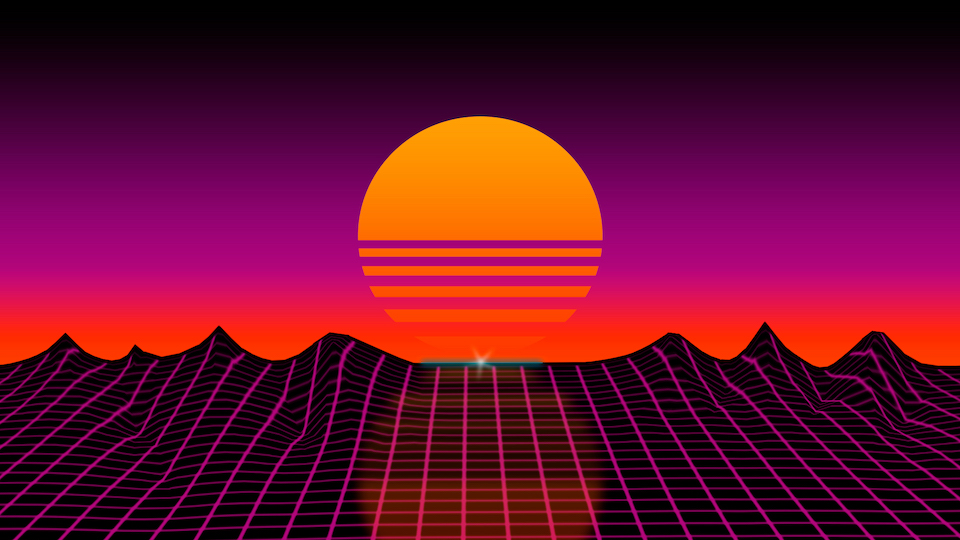
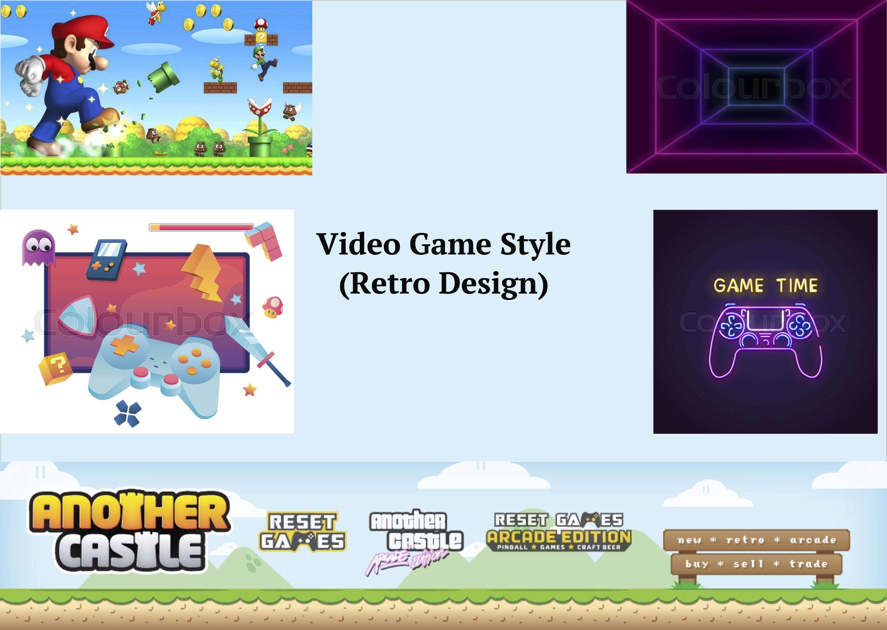
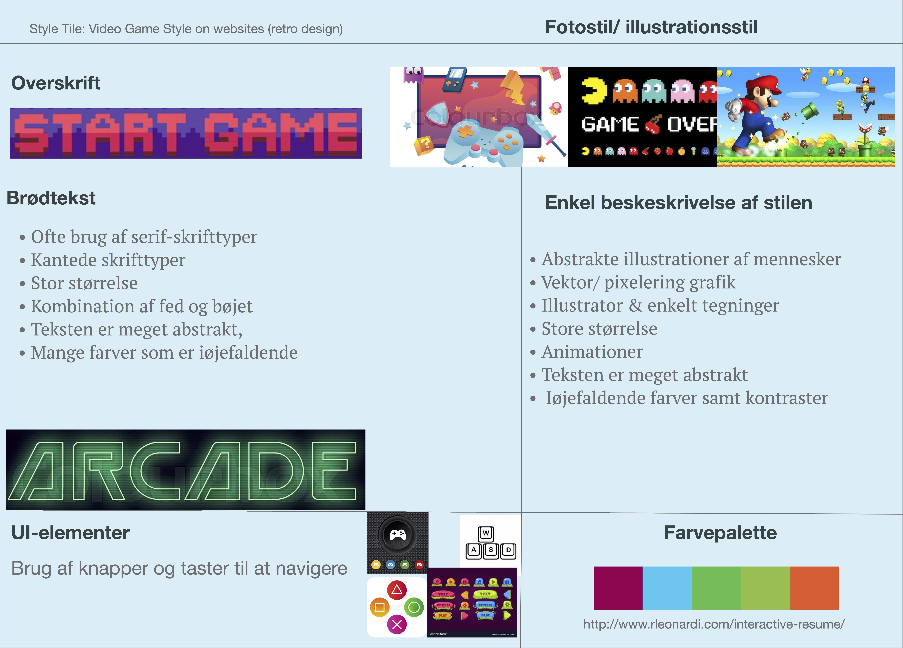

Grundlæggende Webdesign
02.04.02 responsive_site_v2
I denne opgave skulle jeg lave en responsiv site med brug af HTML og CSS med et visuelt udtryk ud fra en tildelt stilart.
Min tildelte stilart var ”Retro Video Game Style”.
I tema 2 om grundlæggende web har jeg lært om forskellige designprocesser og dokumentationsformer. Jeg startede med en idegenering, for at finde frem til et emne der passede til min tildelte stilart. Derefter tog jeg det næste skridt videre til det visuelle ved brug af moodboard og en styletile. Mit styletile var en samling af de farver, fonte og elementer til min hjemmeside. Jeg fik tildelt en wireframe som er et skelet over hvordan HTML-koden skal se ud. Derefter producerede jeg en simpel responsiv webside med forskellige media querys og CSS til styling.
Individuelt arbejde:
- Styletile
- Moodboard
- Logo
- Skitser
- Splashbillede
- Design til stilart
- Fav-ikon
- Kodningen HTML og CSS
Gruppe arbejde:
- Analyse af stilarten Retro Videogame style
- Præsentation af stilart
Tryk på knappen for at se hele Stil-pitch.
Moodboard og Styletile
Moodboard
Styletile

Proces og Dokumentation
Nedenunder kan du se procesdokumentet: